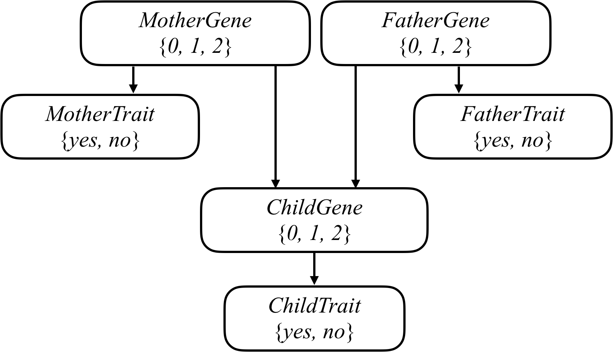

Heredity
The latest version of Python you should use in this 课程 is Python 3.12.
Write an AI to assess the likelihood that a person will have a particular genetic trait.
$ python heredity.py data/family0.csv
Harry:
Gene:
2: 0.0092
1: 0.4557
0: 0.5351
Trait:
True: 0.2665
False: 0.7335
James:
Gene:
2: 0.1976
1: 0.5106
0: 0.2918
Trait:
True: 1.0000
False: 0.0000
Lily:
Gene:
2: 0.0036
1: 0.0136
0: 0.9827
Trait:
True: 0.0000
False: 1.0000
When to Do It
How to Get Help
背景
Mutated versions of the GJB2 gene are one of the leading causes of hearing impairment in newborns. Each person carries two versions of the gene, so each person has the potential to possess either 0, 1, or 2 copies of the hearing impairment version GJB2. Unless a person undergoes genetic 测试, though, it’s not so easy to know how many copies of mutated GJB2 a person has. This is some “hidden state”: information that has an effect that we can observe (hearing impairment), but that we don’t necessarily directly know. After all, some people might have 1 or 2 copies of mutated GJB2 but not exhibit hearing impairment, while others might have no copies of mutated GJB2 yet still exhibit hearing impairment.
Every child inherits one copy of the GJB2 gene from each of their parents. If a parent has two copies of the mutated gene, then they will pass the mutated gene on to the child; if a parent has no copies of the mutated gene, then they will not pass the mutated gene on to the child; and if a parent has one copy of the mutated gene, then the gene is passed on to the child with probability 0.5. After a gene is passed on, though, it has some probability of undergoing additional mutation: changing from a version of the gene that causes hearing impairment to a version that doesn’t, or vice versa.
We can attempt to model all of these relationships by forming a Bayesian Network of all the relevant variables, as in the one below, which considers a family of two parents and a single child.

Each person in the family has a Gene random variable representing how many copies of a particular gene (e.g., the hearing impairment version of GJB2) a person has: a value that is 0, 1, or 2. Each person in the family also has a Trait random variable, which is yes or no depending on whether that person expresses a trait (e.g., hearing impairment) based on that gene. There’s an arrow from each person’s Gene variable to their Trait variable to encode the idea that a person’s genes affect the probability that they have a particular trait. Meanwhile, there’s also an arrow from both the mother and father’s Gene random variable to their child’s Gene random variable: the child’s genes are dependent on the genes of their parents.
Your task in this 项目 is to use this model to make inferences 关于 a population. Given information 关于 people, who their parents are, and whether they have a particular observable trait (e.g. hearing loss) caused by a given gene, your AI will infer the probability distribution for each person’s genes, as well as the probability distribution for whether any person will exhibit the trait in 问题.
入门
- 下载 the distribution code from https://cdn.cs50.net/ai/2023/x/项目/2/heredity.zip and unzip it.
Understanding
Take a look at one of the sample data sets in the data directory by opening up data/family0.csv (you can 打开 it up in a text editor, or in a spreadsheet application like Google Sheets, Excel, or Apple Numbers). Notice that the first row defines the columns for this CSV file: name, mother, father, and trait. The 下一页 row indicates that Harry has Lily as a mother, James as a father, and the empty cell for trait means we don’t know whether Harry has the trait or not. James, meanwhile, has no parents listed in the data set (as indicated by the empty cells for mother and father), and does exhibit the trait (as indicated by the 1 in the trait cell). Lily, on the other hand, also has no parents listed in the data set, but does not exhibit the trait (as indicated by the 0 in the trait cell).
打开 up heredity.py and take a look first at the definition of PROBS. PROBS is a dictionary containing a number of constants representing probabilities of various different events. All of these events have to do with how many copies of a particular gene a person has (hereafter referred to as simply “the gene”), and whether a person exhibits a particular trait (hereafter referred to as “the trait”) based on that gene. The data here is loosely based on the probabilities for the hearing impairment version of the GJB2 gene and the hearing impairment trait, but by changing these values, you could use your AI to draw inferences 关于 other genes and traits as well!
First, PROBS["gene"] represents the unconditional probability distribution over the gene (i.e., the probability if we know nothing 关于 that person’s parents). Based on the data in the distribution code, it would seem that in the population, there’s a 1% chance of having 2 copies of the gene, a 3% chance of having 1 copy of the gene, and a 96% chance of having 0 copies of the gene.
下一页, PROBS["trait"] represents the conditional probability that a person exhibits a trait (like hearing impairment). This is actually three different probability distributions: one for each possible value for gene. So PROBS["trait"][2] is the probability distribution that a person has the trait given that they have two versions of the gene: in this case, they have a 65% chance of exhibiting the trait, and a 35% chance of not exhibiting the trait. Meanwhile, if a person has 0 copies of the gene, they have a 1% chance of exhibiting the trait, and a 99% chance of not exhibiting the trait.
Finally, PROBS["mutation"] is the probability that a gene mutates from being the gene in 问题 to not being that gene, and vice versa. If a mother has two versions of the gene, for 示例, and therefore passes one on to her child, there’s a 1% chance it mutates into not being the target gene anymore. Conversely, if a mother has no versions of the gene, and therefore does not pass it onto her child, there’s a 1% chance it mutates into being the target gene. It’s therefore possible that even if neither parent has any copies of the gene in 问题, their child might have 1 or even 2 copies of the gene.
Ultimately, the probabilities you calculate will be based on these values in PROBS.
Now, take a look at the main function. The function first loads data from a file into a dictionary people. people maps each person’s 姓名 to another dictionary containing information 关于 them: including their 姓名, their mother (if one is listed in the data set), their father (if one is listed in the data set), and whether they are observed to have the trait in 问题 (True if they do, False if they don’t, and None if we don’t know).
下一页, main defines a dictionary of probabilities, with all probabilities initially set to 0. This is ultimately what your 项目 will compute: for each person, your AI will calculate the probability distribution over how many of copies of the gene they have, as well as whether they have the trait or not. probabilities["Harry"]["gene"][1], for 示例, will be the probability that Harry has 1 copy of the gene, and probabilities["Lily"]["trait"][False] will be the probability that Lily does not exhibit the trait.
If unfamiliar, this probabilities dictionary is created using a Python dictionary comprehension, which in this case creates one key/value pair for each person in our dictionary of people.
Ultimately, we’re looking to calculate these probabilities based on some evidence: given that we know certain people do or do not exhibit the trait, we’d like to determine these probabilities. Recall from 讲座 that we can calculate a conditional probability by summing up all of the joint probabilities that satisfy the evidence, and then normalize those probabilities so that they each sum to 1. Your task in this 项目 is to implement three functions to do just that: joint_probability to compute a joint probability, update to add the newly computed joint probability to the existing probability distribution, and then normalize to ensure all probability distributions sum to 1 at the end.
规格说明
Complete the implementations of joint_probability, update, and normalize.
The joint_probability function should take as input a dictionary of people, along with data 关于 who has how many copies of each of the genes, and who exhibits the trait. The function should return the joint probability of all of those events taking place.
- The function accepts four values as input:
people,one_gene,two_genes, andhave_trait.-
peopleis a dictionary of people as described in the “Understanding” 小组课. The keys represent names, and the values are dictionaries that containmotherandfatherkeys. You 五月 assume that eithermotherandfatherare both blank (no parental information in the data set), ormotherandfatherwill both refer to other people in thepeopledictionary. -
one_geneis a set of all people for whom we want to compute the probability that they have one copy of the gene. -
two_genesis a set of all people for whom we want to compute the probability that they have two copies of the gene. -
have_traitis a set of all people for whom we want to compute the probability that they have the trait. - For any person not in
one_geneortwo_genes, we would like to calculate the probability that they have no copies of the gene; and for anyone not inhave_trait, we would like to calculate the probability that they do not have the trait.
-
- For 示例, if the family consists of Harry, James, and Lily, then calling this function where
one_gene = {"Harry"},two_genes = {"James"}, andtrait = {"Harry", "James"}should calculate the probability that Lily has zero copies of the gene, Harry has one copy of the gene, James has two copies of the gene, Harry exhibits the trait, James exhibits the trait, and Lily does not exhibit the trait. - For anyone with no parents listed in the data set, use the probability distribution
PROBS["gene"]to determine the probability that they have a particular number of the gene. - For anyone with parents in the data set, each parent will pass one of their two genes on to their child randomly, and there is a
PROBS["mutation"]chance that it mutates (goes from being the gene to not being the gene, or vice versa). - Use the probability distribution
PROBS["trait"]to compute the probability that a person does or does not have a particular trait.
The update function adds a new joint distribution probability to the existing probability distributions in probabilities.
- The function accepts five values as input:
probabilities,one_gene,two_genes,have_trait, andp.-
probabilitiesis a dictionary of people as described in the “Understanding” 小组课. Each person is mapped to a"gene"distribution and a"trait"distribution. -
one_geneis a set of people with one copy of the gene in the current joint distribution. -
two_genesis a set of people with two copies of the gene in the current joint distribution. -
have_traitis a set of people with the trait in the current joint distribution. -
pis the probability of the joint distribution.
-
- For each person
personinprobabilities, the function should update theprobabilities[person]["gene"]distribution andprobabilities[person]["trait"]distribution by addingpto the appropriate value in each distribution. All other values should be left unchanged. - For 示例, if
"Harry"were in bothtwo_genesand inhave_trait, thenpwould be added toprobabilities["Harry"]["gene"][2]and toprobabilities["Harry"]["trait"][True]. - The function should not return any value: it just needs to update the
probabilitiesdictionary.
The normalize function updates a dictionary of probabilities such that each probability distribution is normalized (i.e., sums to 1, with relative proportions the same).
- The function accepts a single value:
probabilities.-
probabilitiesis a dictionary of people as described in the “Understanding” 小组课. Each person is mapped to a"gene"distribution and a"trait"distribution.
-
- For both of the distributions for each person in
probabilities, this function should normalize that distribution so that the values in the distribution sum to 1, and the relative values in the distribution are the same. - For 示例, if
probabilities["Harry"]["trait"][True]were equal to0.1andprobabilities["Harry"]["trait"][False]were equal to0.3, then your function should update the former value to be0.25and the latter value to be0.75: the numbers now sum to 1, and the latter value is still three times larger than the former value. - The function should not return any value: it just needs to update the
probabilitiesdictionary.
You should not modify anything else in heredity.py other than the three functions the 规格说明 calls for you to implement, though you 五月 write additional functions and/or import other Python standard library modules. You 五月 also import numpy or pandas, if familiar with them, but you should not use any other third-party Python modules.
示例 Joint Probability
To help you think 关于 how to calculate joint probabilities, we’ve included below an 示例.
Consider the following value for people:
{
'Harry': {'name': 'Harry', 'mother': 'Lily', 'father': 'James', 'trait': None},
'James': {'name': 'James', 'mother': None, 'father': None, 'trait': True},
'Lily': {'name': 'Lily', 'mother': None, 'father': None, 'trait': False}
}
We will here show the calculation of joint_probability(people, {"Harry"}, {"James"}, {"James"}). Based on the arguments, one_gene is {"Harry"}, two_genes is {"James"}, and have_trait is {"James"}. This therefore represents the probability that: Lily has 0 copies of the gene and does not have the trait, Harry has 1 copy of the gene and does not have the trait, and James has 2 copies of the gene and does have the trait.
We start with Lily (the order that we consider people does not matter, so long as we multiply the correct values together, since multiplication is commutative). Lily has 0 copies of the gene with probability 0.96 (this is PROBS["gene"][0]). Given that she has 0 copies of the gene, she doesn’t have the trait with probability 0.99 (this is PROBS["trait"][0][False]). Thus, the probability that she has 0 copies of the gene and she doesn’t have the trait is 0.96 * 0.99 = 0.9504.
下一页, we consider James. James has 2 copies of the gene with probability 0.01 (this is PROBS["gene"][2]). Given that he has 2 copies of the gene, the probability that he does have the trait is 0.65. Thus, the probability that he has 2 copies of the gene and he does have the trait is 0.01 * 0.65 = 0.0065.
Finally, we consider Harry. What’s the probability that Harry has 1 copy of the gene? There are two ways this can happen. Either he gets the gene from his mother and not his father, or he gets the gene from his father and not his mother. His mother Lily has 0 copies of the gene, so Harry will get the gene from his mother with probability 0.01 (this is PROBS["mutation"]), since the only way to get the gene from his mother is if it mutated; conversely, Harry will not get the gene from his mother with probability 0.99. His father James has 2 copies of the gene, so Harry will get the gene from his father with probability 0.99 (this is 1 - PROBS["mutation"]), but will get the gene from his mother with probability 0.01 (the chance of a mutation). Both of these cases can be added together to get 0.99 * 0.99 + 0.01 * 0.01 = 0.9802, the probability that Harry has 1 copy of the gene.
Given that Harry has 1 copy of the gene, the probability that he does not have the trait is 0.44 (this is PROBS["trait"][1][False]). So the probability that Harry has 1 copy of the gene and does not have the trait is 0.9802 * 0.44 = 0.431288.
Therefore, the entire joint probability is just the result of multiplying all of these values for each of the three people: 0.9504 * 0.0065 * 0.431288 = 0.0026643247488.
提示
- Recall that to compute a joint probability of multiple events, you can do so by multiplying those probabilities together. But remember that for any child, the probability of them having a certain number of genes is conditional on what genes their parents have.
测试
If you’d like, you can execute the below (after setting up check50 on your system) to evaluate the correctness of your code. This isn’t obligatory; you can simply 提交 following the steps at the end of this 规格说明, and these same tests will run on our server. Either way, be sure to compile and test it yourself as well!
check50 ai50/projects/2024/x/heredity
Execute the below to evaluate the style of your code using style50.
style50 heredity.py
Remember that you 五月 not import any modules (other than those in the Python standard library) other than those explicitly authorized herein. Doing so will not only prevent check50 from running, but will also prevent submit50 from scoring your 作业, since it uses check50. If that happens, you’ve likely imported something disallowed or otherwise modified the distribution code in an unauthorized manner, per the 规格说明. There are certainly 工具 out there that trivialize some of these 项目, but that’s not the goal here; you’re learning things at a lower level. If we don’t say here that you can use them, you can’t use them.
如何提交
- Visit this link, log in with your GitHub account, and click Authorize cs50. Then, check the box indicating that you’d like to grant 课程 工作人员 access to your submissions, and click Join 课程.
-
Install Git and, optionally, install
submit50. - If you’ve installed
submit50, executesubmit50 ai50/projects/2024/x/heredityOtherwise, using Git, push your work to
https://github.com/me50/USERNAME.git, whereUSERNAMEis your GitHub username, on a branch calledai50/projects/2024/x/heredity.
If you 提交 your code directly using Git, rather than submit50, do not include files or folders other than those you are actually instructed to modify in the 规格说明 above. (That is to say, don’t upload your entire directory!)
Work should be graded within five minutes. You can then go to https://cs50.me/cs50ai to view your current progress!